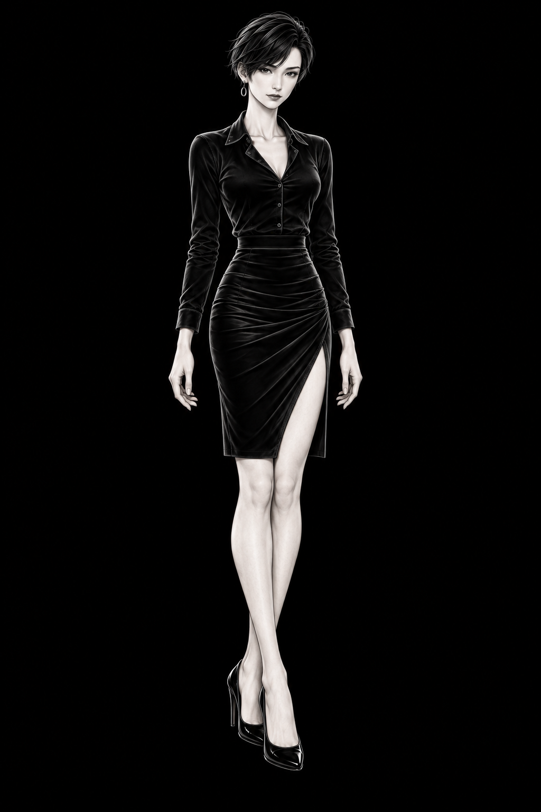
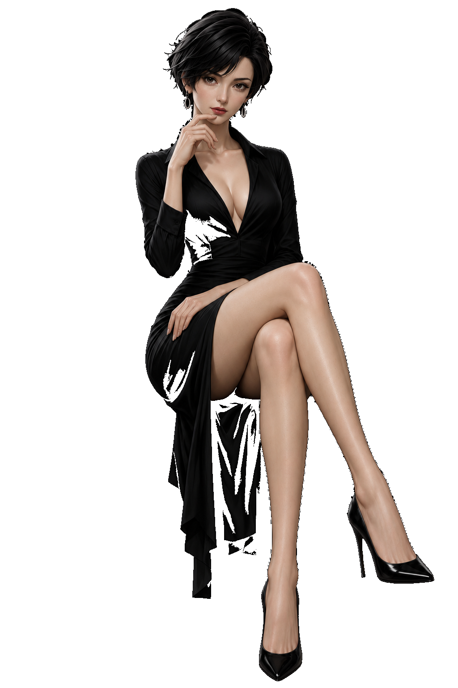
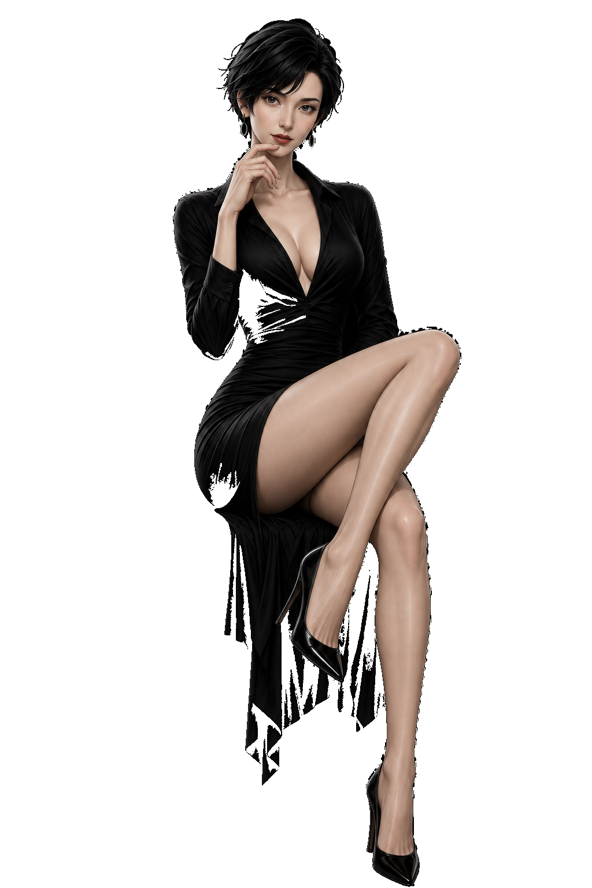
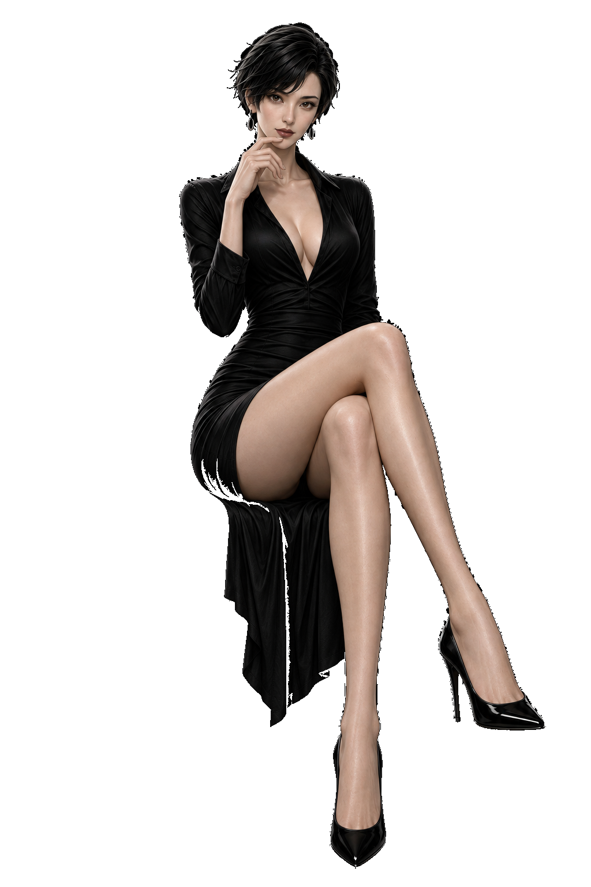
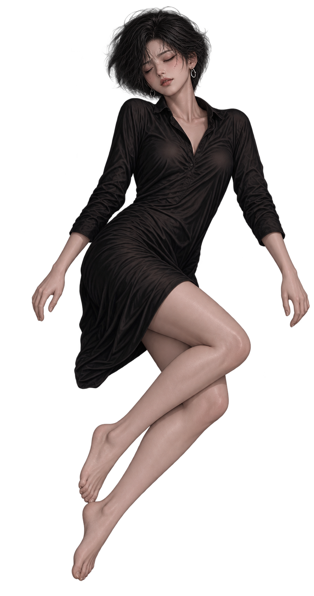
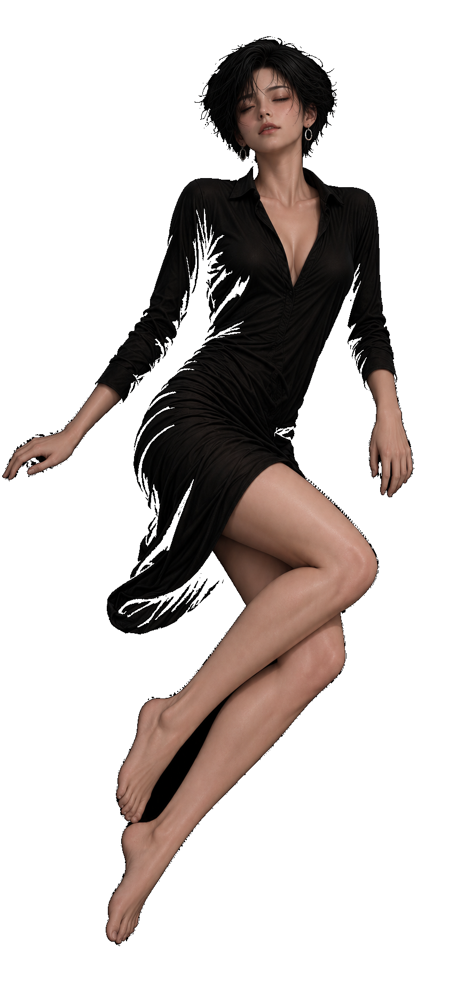
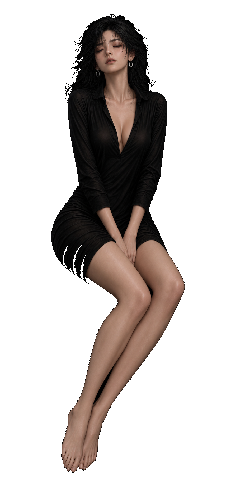
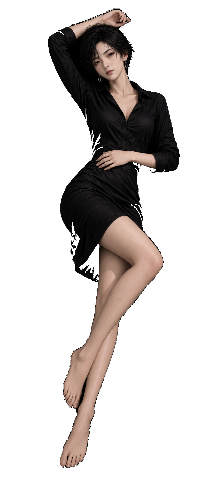
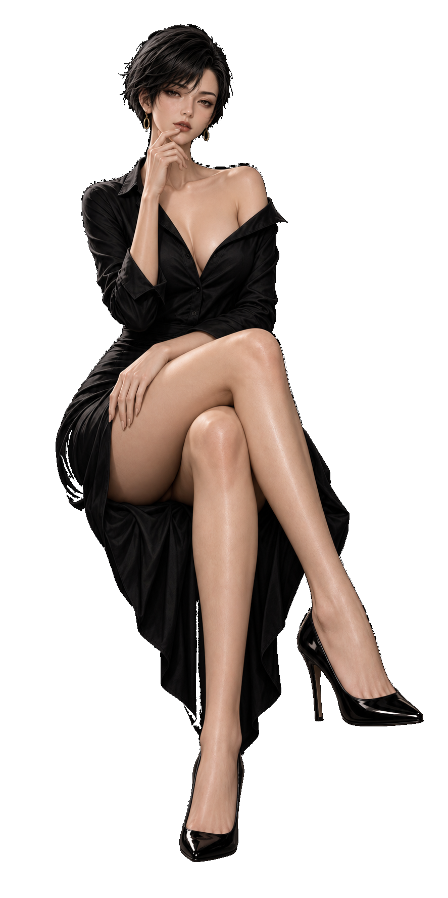

loki_approved_seated_thought_20261102.png


1024 × 1536 · 原本一致 True · 目の幅／画像高 0.0664
顔・頭・肩・手・脚を比較。人の確認後に採用判断する。
左＝指定基準、右＝追加画像。比率の数値は画角を含む参考値です。同一人物かどうかは自動判定していません。頭を切る、手・上半身が大きくなる、顔が幼くなる等を目視で確認します。


1024 × 1536 · 原本一致 True · 目の幅／画像高 0.0664
顔・頭・肩・手・脚を比較。人の確認後に採用判断する。

1024 × 1536 · 原本一致 True · 目の幅／画像高 0.0677
顔・頭・肩・手・脚を比較。人の確認後に採用判断する。

1024 × 1536 · 原本一致 True · 目の幅／画像高 0.0625
顔・頭・肩・手・脚を比較。人の確認後に採用判断する。

401 × 760 · 原本一致 True · 目の幅／画像高 0.0526
顔・頭・肩・手・脚を比較。人の確認後に採用判断する。

841 × 1870 · 原本一致 True · 目の幅／画像高 0.0706
顔・頭・肩・手・脚を比較。人の確認後に採用判断する。

856 × 1837 · 原本一致 True · 目の幅／画像高 0.0615
顔・頭・肩・手・脚を比較。寄り構図：自動巡回の対象外。人の確認後に採用判断する。

836 × 1881 · 原本一致 True · 目の幅／画像高 0.051
顔・頭・肩・手・脚を比較。人の確認後に採用判断する。

887 × 1774 · 原本一致 True · 目の幅／画像高 0.0569
顔・頭・肩・手・脚を比較。人の確認後に採用判断する。